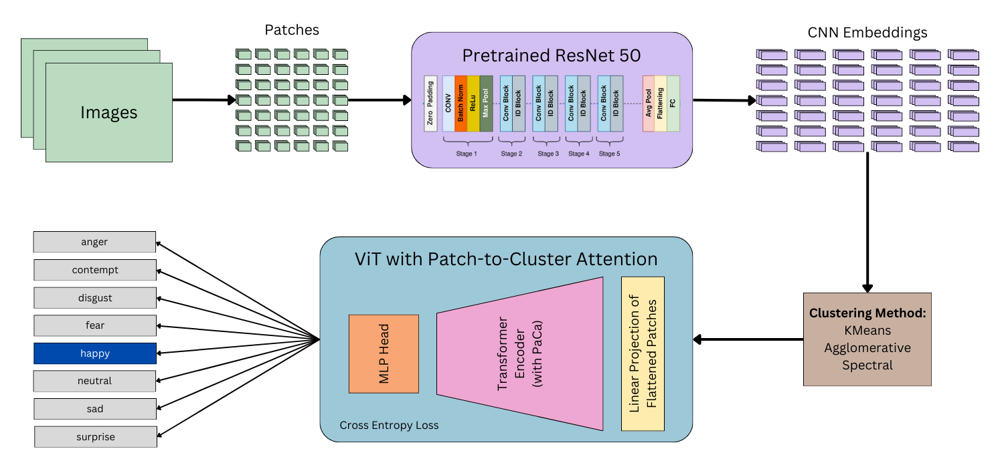

Introduction
This project investigates how different image patch clustering algorithms affect the accuracy of facial emotion recognition.
Dataset and Preprocessing
Dataset Description
The dataset used for this project is derived from the AffectNet Training Data, one of the largest datasets for facial emotion recognition. It provides labeled examples of human faces for eight primary emotions: Anger, Contempt, Disgust, Fear, Happiness, Neutral, Sadness, and Surprise.
AffectNet stands out due to its diversity, with faces captured in real-world environments under varying lighting, poses, and demographics. This makes it an ideal dataset for training models capable of generalizing across diverse conditions.
Challenges in the Dataset
Despite its richness, AffectNet presents significant challenges:
- Class Imbalance: Certain emotions like "Happiness" dominate the dataset, while others like "Disgust" are underrepresented.
- Variability: Differences in lighting, facial occlusions, and pose angles add noise to the dataset.
- Subjectivity: Emotions are inherently subjective, and labeling inconsistencies may arise across annotators.
Original Emotion Distribution
The original dataset exhibits a skewed distribution across emotion classes, as visualized in the chart below:
Balanced Dataset
To address the class imbalance, we balanced the dataset by subsampling 2,477 images per class, resulting in a total of 19,816 images. This ensures fair representation across all emotions and prevents the model from being biased toward overrepresented classes.
Example Images
Below are sample images from the dataset, showcasing one example from each emotion class, labeled for clarity:
Anger
Contempt
Disgust
Fear
Happiness
Neutral
Sad
Surprise
Methods
Figure 1: Architecture Flow
Our preliminary analysis of the generated embeddings reveals the following insights:
- Clustering Patterns: Both PCA and t-SNE visualizations show distinct regions, suggesting potential grouping of embeddings based on facial emotion characteristics or metadata (e.g., specific emotion clusters or labeling differences).
- Separation in t-SNE: The t-SNE plot highlights better local relationships, indicating that embeddings capture nuanced features effectively, making it suitable for identifying distinct emotions.
- Outlier Detection: Sparse points in the plots may correspond to outliers or unique embeddings, potentially representing uncommon emotional patterns or anomalies in the dataset.
- Next Steps: Incorporating metadata (e.g., intensity scores or subject identifiers) as color-coded labels could reveal additional patterns and validate how well embeddings align with these attributes.
Clustering Comparison Table
| Clusters | KMeans | Agglomerative | Spectral |
|---|---|---|---|
| 2 | 33.65% | 28.71% | 44.00% |
| 4 | 26.46% | 41.42% | 38.75% |
| 8 | 31.76% | 25.38% | 33.00% |
Figure 3

Figure 4:
Our preliminary analysis reveals the following insights:
- AI-generated music tends to have more repetitive patterns.
- Human-composed music demonstrates greater adherence to themes and more emotion.
- Listeners rated AI-generated music as "very generic."
Our findings show that there is a struggle to distinguish between the pieces and we will further investigate the results as well as potentially run another larger scale study to learn more.
Conclusion
Our findings highlight the potential for AI-generated music to evolve with more nuanced training. Future work will refine these models and incorporate deeper listener feedback.